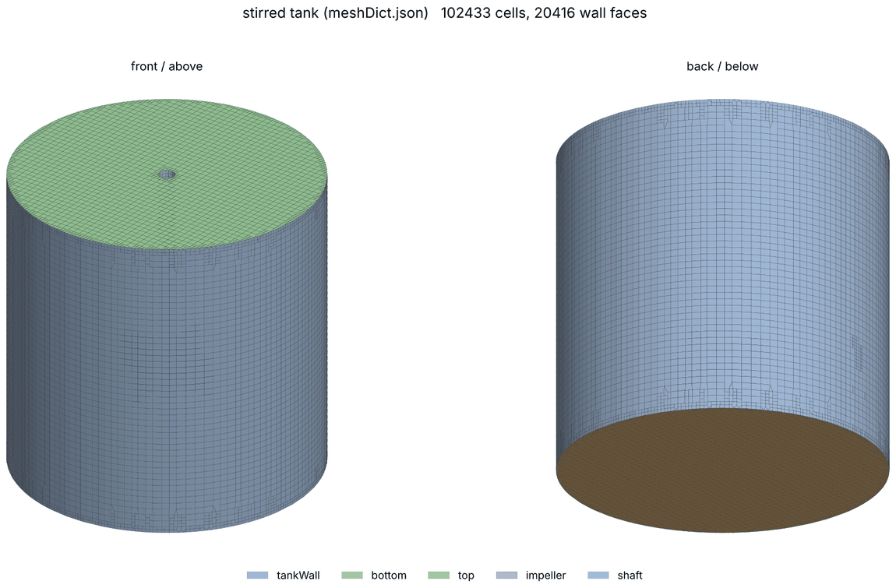
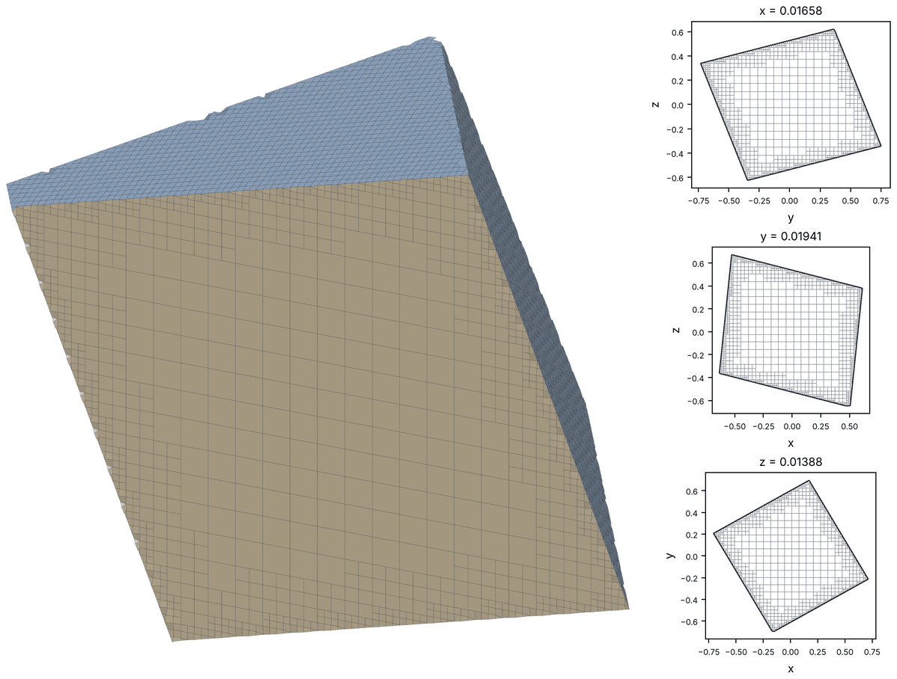
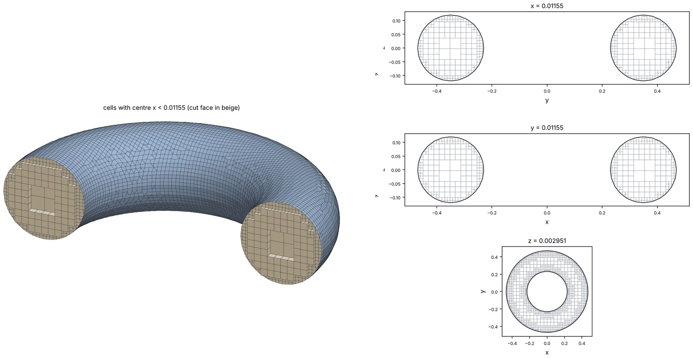

実行例
どの図も、黒い線が STL の壁、赤い線が回転ゾーンの界面（faceZone）、灰色の線がセルの面です。 セル数と時間は、Rust 拡張ありで 4 コアのマシンで測った値です（品質チェックを含む）。図をクリックすると原寸で開きます。
攪拌槽（examples/stirred_tank）
直径 300 mm・高さ 300 mm の平底の槽に、直径 100 mm の 4 枚パドル翼（厚さ 6 mm）と、蓋まで伸びるシャフトを置いた形状です。
STL は python make_geometry.py で作ります（solid: tankWall, bottom, top, impeller, shaft）。
回転ゾーン（meshDict.json）
- 102,433 セル
- 13.2 秒
- 直交格子 + 円筒の回転ゾーン
翼のまわりに半径 70 mm の円筒の回転ゾーンを置いた例です。円筒は八分木のカットで切断されるので、界面（赤）は粗いセルの所でも円筒面にぴったり乗ります。 翼（レベル 3）・シャフト（レベル 2）・回転ゾーンの内部（レベル 2）だけを細かくし、槽の壁はレベル 1 です。



meshDict.json
{
"domain": "tank.stl",
"baseCellSize": 0.0125,
"surfaceRefinement": { "default": 1, "impeller": 3, "shaft": 2 },
"featureLevel": 2,
"bufferLayers": 2,
"snapTolerance": 0.3,
"mergeRatio": 0.25,
"rotatingZones": [
{
"name": "rotor",
"cylinder": { "point1": [0, 0, 0.06], "point2": [0, 0, 0.14], "radius": 0.07 },
"surfaceLevel": 2,
"volumeLevel": 2,
"omega": 31.416
}
],
"patchTypes": { "top": "wall" },
"case": "case"
}円筒ベースメッシュ（meshDict_cylindrical.json）
- 136,620 セル
- 22 秒
- 同心ブロックのベースメッシュ
八分木の根を、軸まわりの同心ブロック（中心の正方形 + 3 つのリング）にした例です。セルが周方向に並ぶので、回転ゾーンの界面や槽の壁に沿ったメッシュになります。 ブロックの境界では分割数の比が整数でなくても、面を重ね合わせて適合したメッシュにします。

baseMesh の設定
"baseMesh": {
"type": "cylindrical",
"origin": [0, 0, 0],
"axis": [0, 0, 1],
"nz": 24,
"core": { "halfWidth": 0.0375, "n": 6 },
"blocks": [
{ "rOuter": 0.06, "nr": 2 },
{ "rOuter": 0.10, "nr": 3 },
{ "rOuter": 0.155, "nr": 4 }
]
}境界層（meshDict_layers.json）
- 163,633 セル
- 14.9 秒
- 全壁に 3 層
回転ゾーンの例に、すべての壁パッチへ 3 層のプリズム層を加えた例です。回転ゾーンの界面にかかる所では、層の側面も界面の円筒面に乗ったままです。

addLayers の設定
"addLayers": { "nLayers": 3, "expansionRatio": 1.2, "finalLayerThickness": 0.3 }ローター・ステーター（狭い隙間の中の界面）
- 596,156 セル
- 119 秒
- 隙間 1 mm
攪拌槽の翼のすぐ外側に、固定リング（ステーター）を置いた形状です。リングの内面は翼の先端の角から 1 mm 外にあり、
回転ゾーンの界面はその隙間の中央（翼から 0.5 mm）に置きます。界面と両側の壁の間にそれぞれセルが入るように、
wallProximity で壁に近い部分の界面だけを細かくし、autoGapRefinement で隙間に面した壁を細かくします。
STL は python make_geometry.py --stator 1 で作ります。リングの内面は solid statorInner、それ以外は stator です。

隙間が狭いほどセル数が急に増えます。界面と壁の間（隙間の半分）に 1 セル以上入れるため、隙間の半分程度のセルが界面の全周に並びます。
この形状では、隙間 1 mm で約 60 万セル、隙間 0.5 mm で約 200 万セル（15 GB のメモリでは足りない）になります。
MRF で計算するなら、"conforming": false（セル中心で回転ゾーンを選ぶ）にすれば界面のための細分化が要りません（AMI には使えません）。
meshDict（隙間 1 mm）
{
"domain": "tank_stator_1mm.stl",
"baseCellSize": 0.0125,
"surfaceRefinement": { "default": 1, "impeller": 3, "shaft": 2, "stator": 3, "statorInner": 3 },
"featureLevel": 2,
"bufferLayers": 2,
"snapTolerance": 0.3,
"mergeRatio": 0.25,
"autoGapRefinement": { "cellsAcross": 2, "maxLevel": 5 },
"rotatingZones": [
{
"name": "rotor",
"cylinder": { "point1": [0, 0, 0.074], "point2": [0, 0, 0.126], "radius": 0.05059 },
"surfaceLevel": 3,
"volumeLevel": 2,
"wallProximity": { "distance": 0.001, "level": 5 },
"omega": 31.416
}
],
"patchTypes": { "top": "wall" },
"case": "case_stator"
}隙間 0.5 mm の設定は examples/stirred_tank/meshDict_stator.json にあります（maxLevel・level を 6 にする）。
形状のテスト集（benchmark/）
ベンチマークの人工形状（python benchmark/make_synthetic.py で生成）から 5 つです。どれも外接箱の最長辺の 1/24 をベースセルにし、
表面をレベル 2 まで細かくしています。各図は、手前半分のセルを取り除いた 3D 図と、中央の 3 断面です。







このほかにも、薄い壁・汚れた STL（重複した三角形、開いた辺、向きの混在）など 26 の形状で、失敗・警告・品質の低下を一覧にできます （benchmark/README.md）。
画像の作り方
このページの画像は、次のスクリプトで作り直せます（Rust 拡張ありで約 5 分）。
python tools/make_docs_images.py # すべて → docs/images/
python tools/make_docs_images.py --only stator # 一部だけ（tank, cylindrical, layers, stator, shapes）手元のメッシュの画像は python benchmark/render_mesh.py CASE（3D 図と断面図）、または
examples/stirred_tank/run.py の cutmesh.viz.plot_slice（断面図）で描けます。